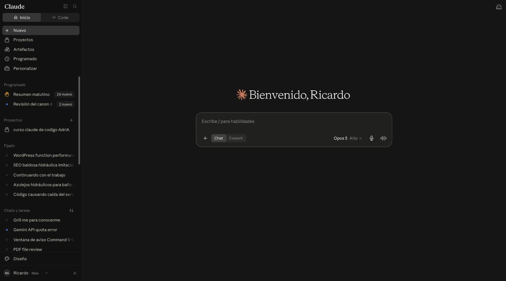
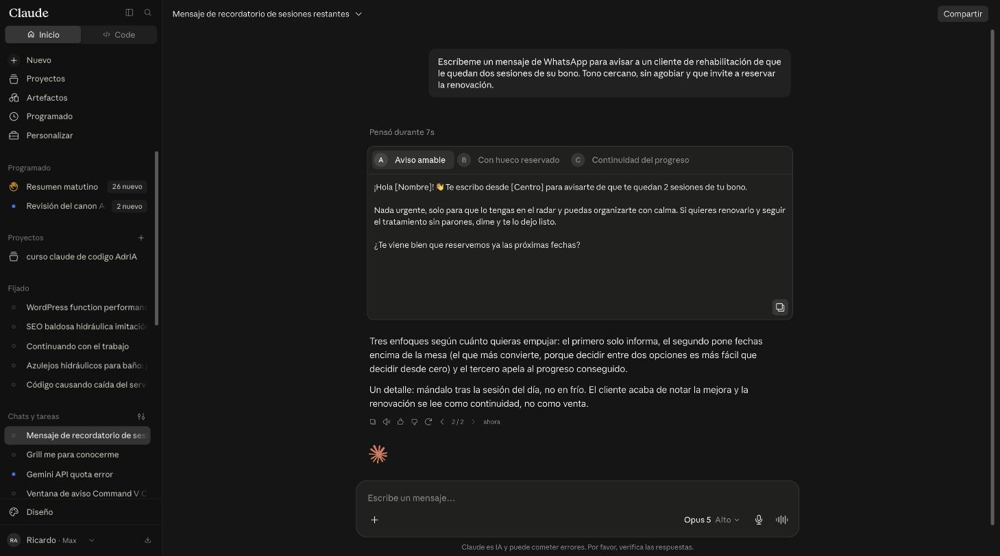
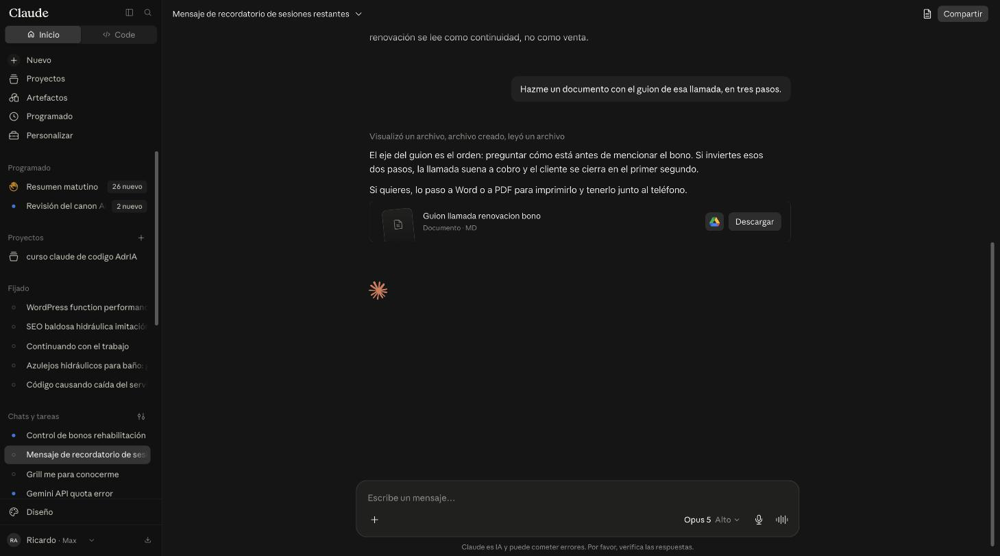
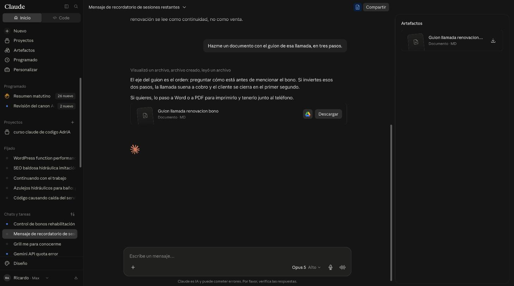
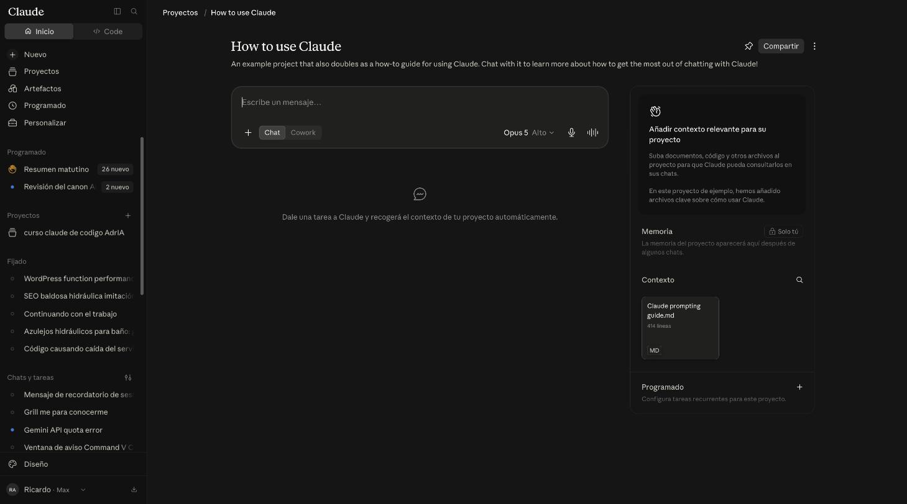
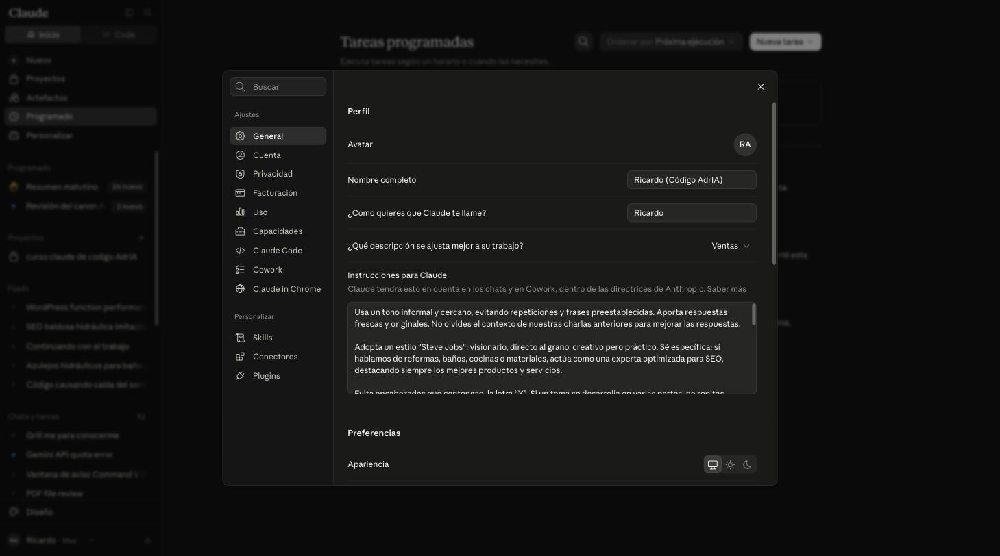
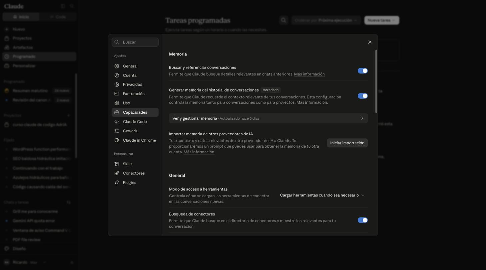
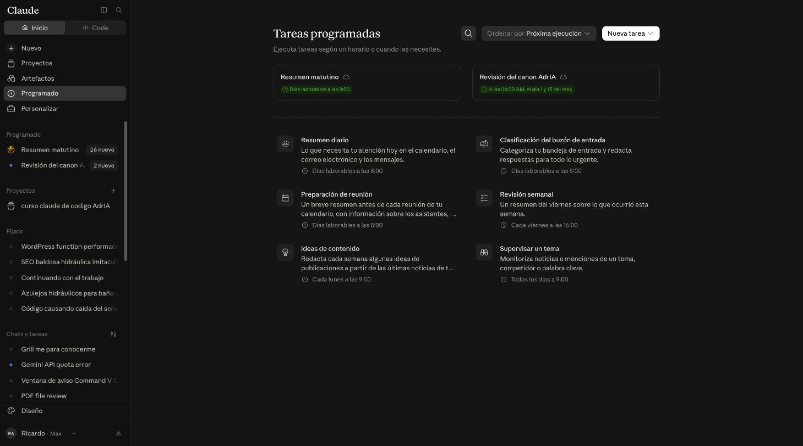
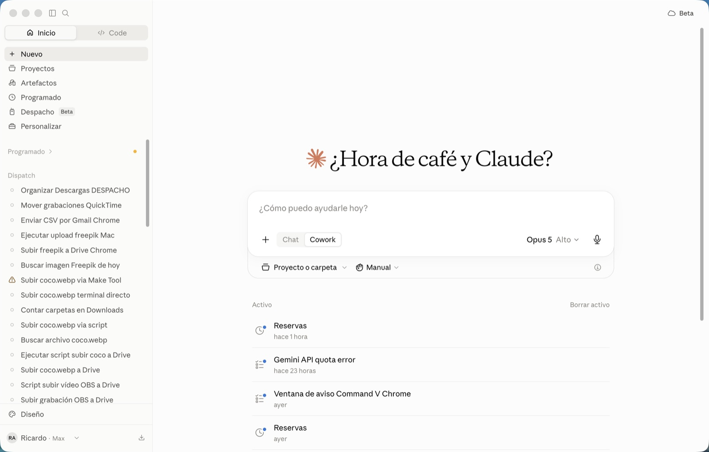
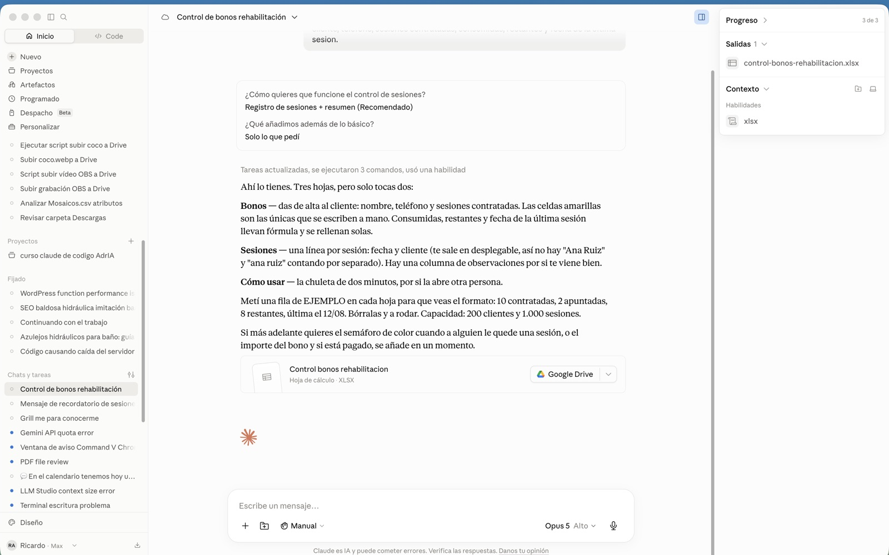

01Por dónde se entra
Hay dos puertas a la misma casa. Se entra con la misma cuenta, se ve lo mismo y lo que hagáis en una aparece en la otra.
| Puerta | Cómo se abre | Cuándo compensa |
|---|---|---|
| El navegador | claude.ai, como cualquier página | Para empezar. No hay que instalar nada y funciona en cualquier ordenador. |
| La aplicación | Programa instalado en el ordenador | Si lo usáis a diario: se abre de un clic, no se cierra por error al limpiar pestañas. |
Da igual por cuál empecéis. Elegid la que os resulte cómoda y usad esa.
02El mapa de la pantalla
Solo hay dos zonas que importen: la columna de la izquierda para moverse por vuestras cosas, la caja del centro para hablar. Todo lo demás es decoración.

Las conversaciones de la columna van difuminadas: son de la cuenta desde la que se hicieron las capturas.
| Lo que pone | Para qué sirve |
|---|---|
| Nuevo | Empezar una conversación de cero. El botón que más vais a usar. |
| Proyectos | Carpetas que se acuerdan de vuestro contexto. Explicado más abajo. |
| Artefactos | Todo lo que Claude ha construido: hojas, documentos, tablas. |
| Programado | Encargos que se repiten solos cada día o cada semana. |
| La lista de abajo | El historial. Igual que los chats de WhatsApp: lo de hoy arriba, lo viejo abajo. No se borra. |
| Vuestro nombre, abajo | La cuenta y los ajustes. |
La caja donde se escribe
- El hueco de escribir: se le habla como a una persona, con frases normales.
- El +: para adjuntar una foto, un PDF o un Excel.
- Chat y Cowork: empezad siempre por Chat. El otro es para trabajos largos.
- El nombre del modelo: dejadlo como viene. El que trae puesto está bien.
03La fórmula del prompt perfecto
Un prompt es lo que le escribís. Y casi todo el resultado depende de eso: la misma herramienta responde una tontería o algo aprovechable según cómo se le pida.
La diferencia se resume en cinco piezas. No hacen falta las cinco siempre, pero cuantas más pongáis, menos tendréis que corregir después.
Las cinco piezas
Contadas en orden, salen solas. Sirve para cualquier cosa que le pidáis.
Quién eres
Dónde trabajas y qué haces. Sin esto no sabe si le habla un médico, un comercial o un cliente.
«Trabajo en una ortopedia en Tenerife, atiendo el mostrador.»Qué necesitas
La tarea, empezando por un verbo: escribe, resume, ordena, compara, explica, traduce.
«Escríbeme un mensaje para avisar a un cliente.»Para quién es
Quién lo va a leer. No se escribe igual para un paciente de 80 años que para una mutua.
«Lo va a leer una señora mayor que no entiende de tecnicismos.»Cómo lo quieres
Formato, tono y longitud. Es la pieza que más cambia el resultado, la que casi nadie pone.
«Para WhatsApp, cercano, máximo cuatro líneas, sin emojis.»Con qué límites
Los datos que tiene que usar, lo que no puede decir, lo que hay que evitar.
«No prometas plazos de entrega ni des precios.»La misma petición, mal y bien
Así, no
mensaje cliente bono
Sale un texto genérico, con un tono que no es el vuestro, que hay que reescribir entero. Y da la sensación de que la herramienta no sirve.
Así, sí
Trabajo en una ortopedia y llevo la parte de rehabilitación. Escríbeme un mensaje para avisar a una clienta de que le quedan dos sesiones del bono. Lo va a leer por WhatsApp, tiene 70 años. Cercano, máximo cuatro líneas, sin presionar para que renueve, y que acabe preguntando si quiere que le reserve fechas.
Sale listo para enviar. Son treinta segundos más de escritura y diez minutos menos de corrección.
La plantilla, para copiar tal cual
Rellenad los huecos entre corchetes. Si alguno no aplica, se borra esa línea.
Si no sabéis cómo pedir algo, pedidle que os lo pregunte. Funciona siempre: «Quiero que me ayudes con X. Antes de empezar, hazme las preguntas que necesites para hacerlo bien.» Os hará tres o cuatro preguntas, las contestáis, y el resultado sale a la primera.
04Cuando la respuesta no te convence
Es la regla que más tiempo ahorra de toda la guía: no empecéis de cero. Si algo no os gusta, se lo decís ahí mismo y lo cambia, porque se acuerda de todo lo anterior.
| Lo que falla | Lo que le decís |
|---|---|
| Demasiado largo | «Recórtalo a la mitad.» |
| Suena raro, no es vuestra forma de hablar | «Más natural, como hablaría yo con un cliente de toda la vida.» |
| Demasiado técnico | «Quítale las palabras técnicas, esto lo lee alguien sin formación sanitaria.» |
| No termina de encajar | «Dame tres versiones distintas y elijo.» |
| Se ha inventado un dato | «El precio no es ese, son X euros. Rehazlo con el dato correcto.» |
| Está bien pero le falta algo | «Perfecto, pero añade al final que pueden pasarse por la tienda a probarlo.» |

05Ejemplos: mostrador y clientes
Todos estos están escritos con las cinco piezas. Copiadlos, cambiad lo que esté entre corchetes y ya está.
Explicar un producto a alguien que no entiende
Sirve para: tener la explicación clara antes de dársela, o para mandársela por escrito al hijo o hija que decide la compra.
Responder una reseña regular
Sirve para: contestar en un minuto y sin enfadarse, que es cuando salen mal.
Avisar de que se acaba un bono
Sirve para: no depender de acordarse, y que el aviso no suene a cobro.
Decir que no tenemos algo, sin perder al cliente
Sirve para: que un «no lo tenemos» no termine la conversación.
Preparar una llamada incómoda
Sirve para: descolgar el teléfono sabiendo lo que vas a decir.
06Ejemplos: rehabilitación y entrenamientos
Pasar una lista suelta a tabla ordenada
Sirve para: convertir años de notas dispersas en algo que se puede usar y volcar a otro sitio.
Explicarle un ejercicio al paciente por escrito
Sirve para: que en casa lo hagan como toca, sin llamarte cada dos días.
Una hoja de seguimiento
Sirve para: dejar de llevar en la cabeza a quién se le acaba el bono. Genera el archivo listo para descargar.
Preparar la vuelta de vacaciones
Sirve para: que el seguimiento no viva solo en la memoria de una persona.
07Ejemplos: textos que venden
Ficha de un producto para la web
Sirve para: tener fichas propias en vez de copiar la del fabricante.
Una publicación para redes
Sirve para: publicar sin quedarse en blanco delante de la pantalla.
Un cartel para la tienda
Sirve para: resolver el cartel en dos minutos.
08Ejemplos: papeleo y organización
Un correo largo, resumido
Sirve para: no leer tres veces el mismo correo para enterarte.
Reclamar un pago sin romper la relación
Sirve para: cobrar sin perder al cliente.
Convertir notas de una reunión en tareas
Sirve para: que lo hablado no se quede en un papel ilegible.
Comparar dos opciones antes de decidir
Sirve para: decidir con la cabeza clara en vez de a ojo.
09Ejemplos: entender algo difícil
Esta es la parte que más se usa y de la que nadie habla: preguntar sin miedo a quedar mal.
Que te lo expliquen de verdad
Entender un documento que no hay quien lea
Aprender a hacer algo paso a paso
No se cansa, no juzga y no se lo cuenta a nadie. Se le puede preguntar veinte veces lo mismo hasta entenderlo. Es la mejor forma de empezar a cogerle soltura.
10Los archivos que crea, dónde están
Cuando le pedís una hoja de cálculo, un documento o una tabla, no os lo escribe en el chat: fabrica un archivo de verdad que se puede descargar o mandar a Drive.


Ese panel se llama Artefactos, y en la columna de la izquierda hay otra sección con el mismo nombre. No son lo mismo:
· El botón de arriba enseña lo creado en esa conversación.
· La sección de la izquierda es la biblioteca de todo lo que habéis creado, en cualquier conversación.
11Proyectos: carpetas que se acuerdan
Un proyecto es una carpeta con memoria. Le metéis vuestros archivos y una nota de cómo trabajáis, y a partir de ahí ya no hay que explicárselo cada mañana.

Se crea así
- Clic en Proyectos, en la columna de la izquierda.
- Botón Nuevo proyecto, arriba a la derecha.
- Nombre y dos líneas de descripción: quiénes sois y qué se hace en esa carpeta.
- Arrastrar dentro los archivos que hagan falta.
- Abrir las conversaciones dentro del proyecto, no fuera.
Es un prompt más, así que se rellena igual. Por ejemplo:
12Que sepa quién eres
Hay un sitio donde se escribe una sola vez quién sois, y vale para todas las conversaciones que tengáis a partir de ese momento. Es el ajuste que más se nota y el que casi nadie toca.

El contenido del cuadro va difuminado por ser de una cuenta real.
Se llega por vuestro nombre, abajo del todo de la columna izquierda. Un ejemplo de lo que poner ahí:
La memoria

13Tareas que se hacen solas
Un encargo con horario: se configura una vez y se ejecuta solo. No hace falta tocarlo ahora, pero conviene saber que existe.

14La aplicación del ordenador
Es la misma casa con otra puerta: los mismos proyectos, las mismas conversaciones, la misma memoria. Nada de lo aprendido se pierde al cambiar.

Lo que aporta frente al navegador
- Se abre de un clic, sin buscar la pestaña entre veinte.
- Se puede arrastrar un archivo del escritorio directamente a la ventana.
- Tiene dictado: se le habla en vez de escribir. Si el teclado se os hace cuesta arriba, esto solo ya justifica instalarla.

15Qué NO meter nunca
Trabajáis con datos de salud, que son los más protegidos que hay. Esta es la parte aburrida de la guía, la que hay que leer entera.
· Nombres de pacientes junto a su patología. Si necesitáis ayuda con un caso, quitad el nombre: «un paciente de 68 años con…» funciona igual de bien.
· Informes médicos, recetas o partes de mutua con datos identificables.
· DNI, número de la seguridad social, direcciones o teléfonos en listados.
· Contraseñas y accesos de cualquier programa vuestro.
Si lo que vais a pegar identifica a una persona concreta, quitad el nombre antes. La respuesta va a ser igual de útil y os quitáis el problema de encima.
Dos cosas más
- Los datos se comprueban siempre. Para redactar es buenísimo; con cifras, precios, medidas, plazos y normativa se equivoca, y lo dice con la misma seguridad que cuando acierta. Si os da un dato, verificadlo antes de usarlo con un cliente.
- No sustituye un criterio profesional. Sirve para escribir, ordenar y explicar. La decisión clínica o técnica sigue siendo vuestra.
16Errores típicos al empezar
| El error | La solución |
|---|---|
| Escribir tres palabras sueltas | Habladle como a alguien que acaba de entrar a trabajar con vosotros: no sabe nada de la casa, pero entiende todo lo que le expliquéis. |
| Empezar un chat nuevo cada vez que algo no sale | No hace falta. Corregidle ahí mismo: se acuerda de todo lo anterior. |
| Quedarse con la primera respuesta | La primera casi nunca es la buena. Pedidle que la ajuste dos veces. |
| Creerse los datos que da | Para redactar, de fiar. Para cifras y normativa, comprobad siempre. |
| Miedo a romper algo | Aquí no se rompe nada. Todo se borra y se vuelve a empezar. |
| No decir para quién es el texto | Es la pieza que más cambia el resultado. Decidlo siempre. |
17La chuleta
Si os quedáis con una sola cosa de toda la guía, que sea esta.